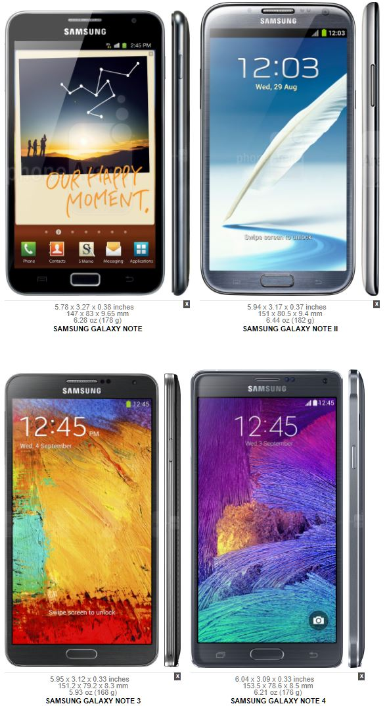
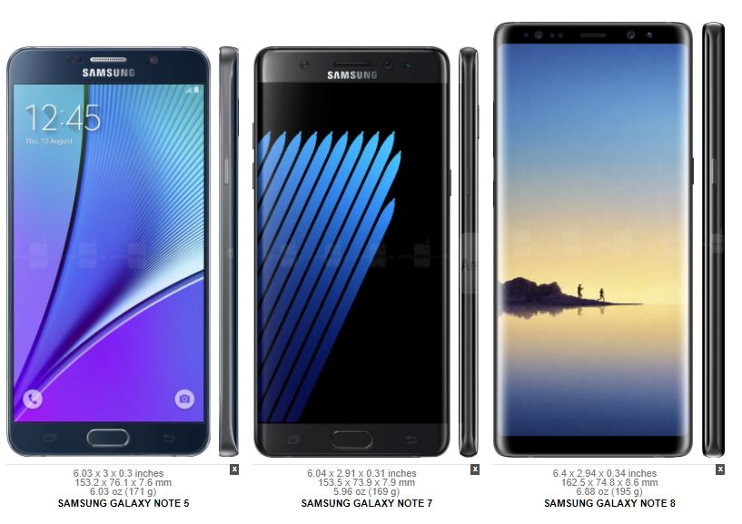

Camera
The Galaxy Note 5 camera was quite similar to the camera of the Galaxy S6, with a few software tweaks. Along with the G4, it also includes OIS, and a very fast autofocus. Its 16MP sensor was also the same as the G4, although generally the Note 5 manages better detail. Its f/1.9 aperature was wide, and allowed better low light pictures.
The 4k video recording was also quite excellent, with the Samsung ICOCELL image processor allowing a higher bit rate. Unlike the G4, the Note 5 included 60fps recording in 1080p, giving twice as much frames leading to smooth video. The front camera is just okay. It allows for 1440p video recording and its a 5MP sensor. The detail is often smudged due to Samsung's agressive face softening feature. Even with "beauty mode" turned off, there is still quite a bit of noticible effect.
The first image is of the iPhone 6s Plus, with its 4:3 aspect ratio, and the second is the Galaxy Noe 5 with its 16:9 aspect ratio.
| Primary |
16 MP, f/1.9, 28mm, OIS, autofocus, LED flash |
| Features |
1/2.6" sensor size, 1.12 µm pixel size, geo-tagging, touch focus, face/smile detection, panorama, HDR |
| Video |
2160p@30fps, 1080p@60fps, dual-video rec. |
| Secondary |
5 MP, 1/4.1" sensor size, 1.34 µm pixel size, f/1.9, 22mm, 1440p@30fps, dual video call, Auto HDR |
The Note 5 is easily distinguishable compared to the iPhone 6s Plus. It always has saturated colors, with a white balance leaning towards warm. In low light, it is evident that the Note 5 is better, with much less noise and better color reproduction. However, if accurate colors was the metric, the win would definitely go towards the iPhone. However, generally the pictures do look better on the Note 5, with better dynamic range and more pleasing colors. This is important in the grand scheme of smartphones because this was the real point where Samsung would start to overtake Apple in the camera department.
Display and Size


The Note used to stand as Samsung's most power user phone. It was the phone that would promise to do everything, at least more than any other phone on the market. The screen was always designed to be big, and the stylus always an integral aspect of the Note. It would be a beautiful pointer tool,drawing tool,and markup tool. When the Note 5 was announced, many power users dismissed it for its lack of removable battery and sd card. However, it was still an excellent phone despite that. It was the first "beautiful" Note, designed not for usable ruggedness, but aesthetics and premium value.
Performance and Battery life
On the newest Android update availible for the Note5, Nougat, the battery life stays relatively the same, if not slightly improved over the tested battery life shown below. The processor, Exynos 7420, is 14nm, enabling much more efficiency than its competition, the Snapdragon 810 and 808. The update was designed well, enabling more functionality without hurting the battery life too much. For only a 3000mAh battery, the note 5 stays relatively consistent over the years and is still a good pick for batterylife.

The Note 5 performed fantastically, and still does with the newest update. The Exynos processor is quite powerful, and the system does not bog down at all over time unlike what people often say about Samsung phones. It performs with minimal stutter, unlike the Lg G4. These phones were both released in the same generation, and so this analysis is quite interesting to show which phone outlasted each other. The Note 5 was a fantastic flagship phone when it first released with a swathe of features, and still remains a strong phone today.
Conclusion
The Galaxy Note5 was an impressive phone in all respects, the camera, the build quality, the design, and the display. It was an entertainment device and a productive device, with the stylus being an essential feature to justify the price of the Note. The Note 5 was definitively the best flagship phone of the year, and the Note series remains one of the top android devices one can buy. The aestheic value proved instrumental in increasing the status of the Note, and making it more appealing to the average user, who doesnt care much about removable batteries and sd cards. It was a bold decision, but one that certainly proved worthwhile.